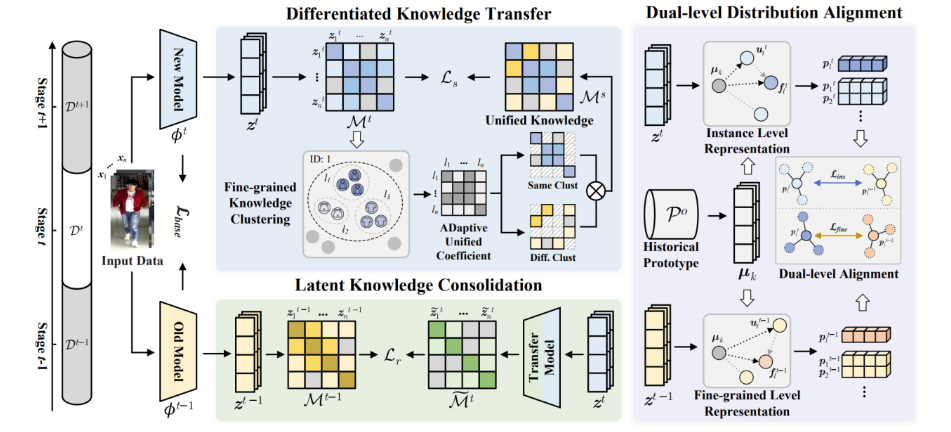

OV³ LAB · PEKING UNIVERSITY
← 返回 Publications 页基于差异化知识巩固的换装终身行人重识别

"DKC: Differentiated Knowledge Consolidation for Cloth-Hybrid Lifelong Person Re-identification", CVPR 2025
作者: 崔振宇（博士生），周嘉欢，彭宇新
通讯作者: 彭宇新
终身行人重识别旨在持续学习新增数据中的行人匹配知识。然而，在终身学习过程中，行人服装会发生不定期变化，要求模型能够累积相互冲突的行人服装与非服装知识。 为克服该问题，本文引入了换装行人重识别任务（Cloth-Hybrid Lifelong Person Re-identification），旨在利用持续到来的换装和非换装数据进行终身行人重识别。 然而，现有方法仅考虑了单一知识的巩固，无法兼顾多种相互冲突的知识，因而对不同场景的处理能力受限。
针对上述挑战，本文提出了一种基于差异化知识巩固的终身行人重识别方法，通过选择性地学习和巩固差异化的新旧知识，促进换装和非换装数据中相互冲突的行人鉴别性知识的学习与保留。 具体贡献如下：（1）差异化知识转移：通过细粒度自聚类自动发现冲突的新知识，并选择性地将其与旧知识融合用于新知识学习，促进了差异化旧知识的发现与获取。 （2）潜在知识巩固：利用更新后的深度特征对旧特征进行重构，缓解模型在学习包含冲突的新知识后，模型对旧知识产生的遗忘。 （3）多层次知识分布对齐：在不同特征分布层级中，对齐并整合具有差异的新旧知识，实现冲突知识共存。本文方法在构建的多个换装行人重识别基准测试中取得了优于现有方法的性能。
该论文的第一作者是北京大学王选计算机研究所2021级博士生崔振宇，通讯作者是彭宇新教授，与周嘉欢助理教授合作完成。